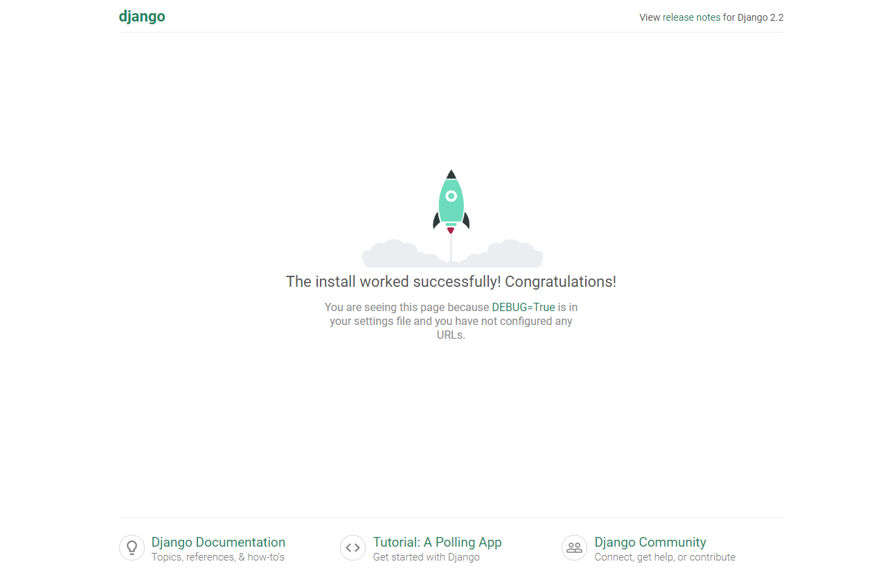
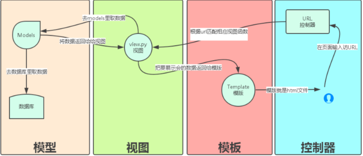
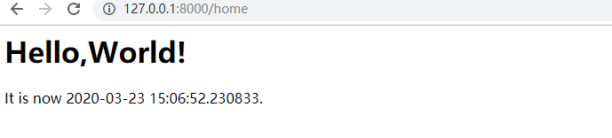

A Complete Beginner`s Guide to Django——What is Django ?
本文是基于 Python 之禅 翻译的 A Complete Beginner`s Guide to Django 系列课程。环境支持是 python3.7 和 Django 2.2.1 。
本文主要讲述了 Django 的工作流程和 MTV 模型的具体含义。
Start a New Project
执行下面的命令来创建一个新的 Django 项目：django-admin startproject myproject
命令行工具 django-admin 会在安装 Django 的时候一起自动安装好。执行上面的命令以后，系统会为 Django 项目生成基础文件夹结构，如下：
1 | myproject/ <-- ⾼级别的⽂件夹 |
解释下这些文件的作用
manage.py使用 django-admin 命令行工具的快捷方式。它用于运行与我们项目相关的管理命令。我们将使用它来运行开发服务器，运行测试，创建迁移等等。__init.py告诉 python 这个文件夹是一个 python 包settings.py这个文件包含了所有的项目配置，将来我们会一直提到这个文件urls.py负责映射我们项目中的路由和路径。wsgi.py用于部署的简单网关接口
Django 自带了一个简单的网络服务器，在开发过程中非常方便，所以我们无需安装任何其他软件即可在本地运行项目，可以通过执行命令测试一下：python manage.py runserber
Terminal 中会弹出如下的内容
1 | (base) G:\《Django入门与实践》\myproject>python manage.py runserver |
我们点击网址 http://127.0.0.1:8000/ 即会看到 Django 项目

使用组合键 Ctrl + C 来终止开发服务器
Django APPs
我们应该明确 Project 是应用的父类，APP 是一个可以完成某件事情的 Web 应用程序，一个应用程序通常由一组 models(数据库表)、views(视图)、templates(模板)、tests(测试)组成。而 Project 是配置和应用程序的集合，一个项目可以由多个应用程序或一个应用程序组成。
明白了 APP 和 Project 的关系之后，我们现在就要为 Project 创建一个 APP.1
2$ (base) G:\《Django入门与实践》\myproject>django-admin startapp boards
# 注意路径必须是和 manage.py 同一路径下
生成一个新的 APP 之后的树如下
1 | myproject |
同样解释下各个文件的作用：
migrations/在这个文件夹里，Django 会存储一些文件以跟踪你在 models.py 文件中创建的变更，用来保持数据库和 models.py 的同步admin.py这个文件为一个 django 内置的应用程序 Django Admin 的配置文件apps.py应用程序本身的配置文件models.py这里是我们定义 WEB 应用程序数据实例的地方，会由 Django 自动转换为数据库表tests.py这个文件用来写当前应用程序的单元测试views.py这是我们处理应用程序请求 (request)/响应(response)周期的文件
RUN APP
打开 Project 配置文件找到 INSTALLED_APPS 变量添加新建的 APP，建议将默认配置和新建 APP 空一行以显示区分。
1 | INSTALLED_APPS = [ |
Hello World -MTV
如何才能将我们想要展示的文章内容在 Django 中展示出来呢？ Django 的 MTV模型有如下三个部分：
- Model : 数据库的相关操作（ORM)
- Template ：模板语法将变量（数据库数据）如何巧妙的嵌入 HTML 页面中
- View : 逻辑处理，将数据库传过来的数据，再传给 HTML 方便他进行嵌入
此外还有一个非常重要的 Urls 分发器：路径与视图函数的映射关系。下图是具体的工作流程

Urls
首先我们需要为主页一个 URL 路径，方便我们通过路由来访问主页。
1 | myproject/urls.py |
View
在 myproject/urls.py 中调用了 boards/views.py 的 home 函数，但是我们还没有构造这个函数。所以接下来我们需要进行构造。每个 View 的函数都需要包括两部分
- request 接受 Web 请求
- HttpReponse 返回 Web 响应
视图是接收
Httprequest对象并返回一个Httpresponse对象的 Python 函数。接收 request 作为参数并返回 response 作为结果，这个流程你必须记住。
1 | boards/views.py |
我们运行项目在网址 http://127.0.0.1:8000/home 即可查看到如下内容

Reference
Conclusions
- 简单的实现了 Django 页面的创建
- 了解了 MTV 中的 View 是如何工作的
本文是 A Complete Beginner`s Guide to Django 的第一部分，大概的描述下 Django 最简单的页面是如何创造的，只使用到了 URLS 模块和 View 模块，简单地使用 HttpResponse 传递参数的方式将内容在 前端页面中进行了展示。